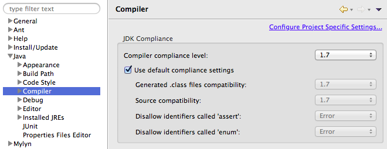
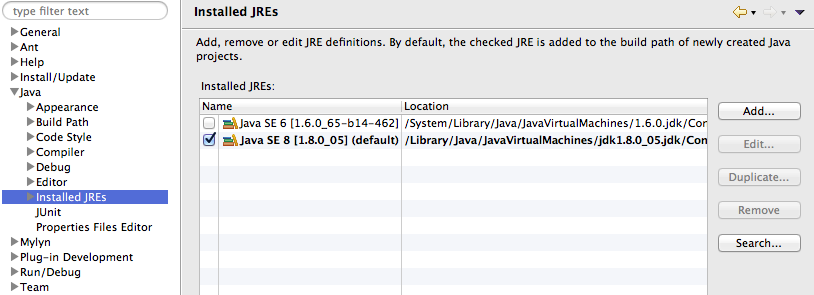
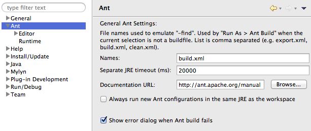
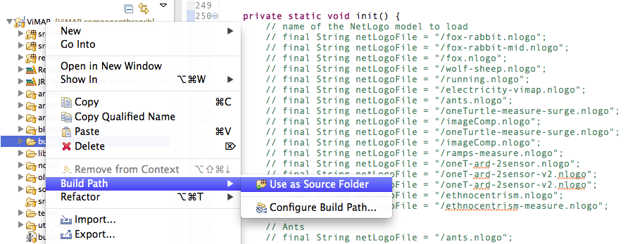
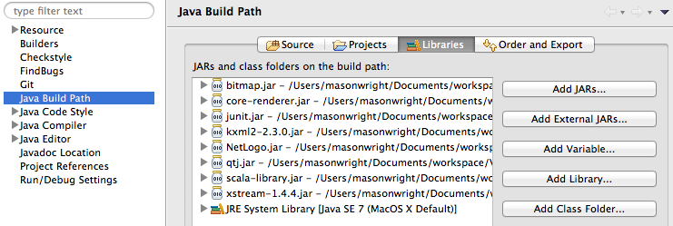
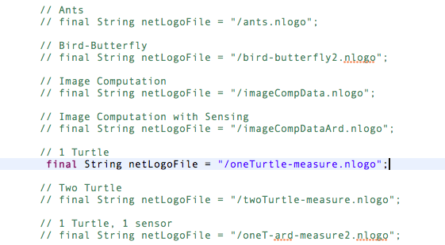

Download
How to build from source (for Mac and Windows)
ECLIPSE
- Download Eclipse.
- Open Eclipse and create or choose a workspace (i.e. a directory). The workspace is where you will house your main project folder, which also serves as your Git repository.
- Download Java SE7, if you don't already have it.
•Java SE7 includes JDK 7 and JRE 7.
•Download it here.
- Eclipse → Preferences → Java → Compiler
•Deselect the checkbox that says "Use default compliance settings"
•Set the compiler compliance level to 1.7.
•Set "Generated .class files compatibility" and "Source compatibility also to 1.7
•Remember to hit 'Apply' to apply your changes. Don't just hit 'OK'.

- Eclipse → Preferences → Java → Installed JREs
•From the list of Installed JRE's choose Java SE7 (recommended) or above. Java SE7 is needed to contribute to the ViMAP open source project.

- Eclipse → Preferences → Ant (General Ant Settings)
• In 'Names:' enter 'build.xml'
• In 'Separate JRE timeout (ms):' enter '20000'
• Select "show error dialog when Ant build fails"
• Click Apply, followed by OK.

- Close Eclipse
GIT
- Install the latest version of Git.
- With the command line, navigate to the directory you want to use for the project; this must be the same directory as the Eclipse workspace. At the command prompt, enter the following:
$ git clone https://github.com/pratim/ViMAP.git
This will create a new repository called 'ViMAP' and clone of all the files in the online repository to this new local repository.
ECLIPSE
- Launch Eclipse and choose the workspace that contains the newly created ViMAP repository, and then click OK.
- File → Import → Git → Projects from Git
•Select 'Projects from Git' and hit 'Next'.
- Choose 'Existing local repository' and hit 'Next'.
- Click 'Add...' in the top right corner, browse for ViMAP repository, select the ViMAP repository folder.
- Now the new repository is recognized so hit 'Finish' or 'Next'.
- Select 'Use the New Project Wizard' and hit Finish.
- Choose 'Java Project' and hit 'Next'.
•Select execution environment to be JavaSE-1.7
•Title the Project "ViMAP"
• Select 'Use default location'
•Click 'Finish' (Hooray!)
- There are only 3 folders that should be set as source folders (i.e. in the build path):
- src/main
- src/test
- resources

- To add a folder that is currently not set as a source folder,
• right-click on that folder → Build path → Use as Source Folder
To remove a folder that is currently set as a source folder but should not be,
• right click on that folder → Build path → Remove from Build Path

NETLOGO
-
Download NetLogo version 4.1.3 and open the .dmg disk image.
- Drag the NetLogo 4.1.3 icon to your dock and/or to your Applications folder. You will be using it quite a bit during development.
JAR FILES
- You need to obtain ten .jar files and add them in Eclipse as external libraries. Five of the jars are located in the NetLogo disk image file (.dmg) that you just downloaded. They are:
- NetLogo.jar
- qtj.jar (extensions → qtj)
- bitmap.jar (extensions → bitmap)
- sample-scala.jar (extensions → sample-scala)
- scala-library.jar (lib)
The rest of the jar files can be found here:
- Once you have all of the JAR files, you must add them to your project.
First, create a directory within your project to house the jar files. It is preferable to house them in the repository rather than on your Desktop.
- Select ViMAP folder in Eclipse
• Project → Properties → Java Build Path
• Click on the "Libraries" tab, then click Add External JARs.
• Find and select each .jar and click "Open"

FINAL STEPS
- Save/Refresh the project.
- Open the "ViMAP.java" file and scroll down to the init( ) function. Make sure only one netLogoFile String is selected and comment the other strings out.

- Save the Project and Run to launch the project from source.